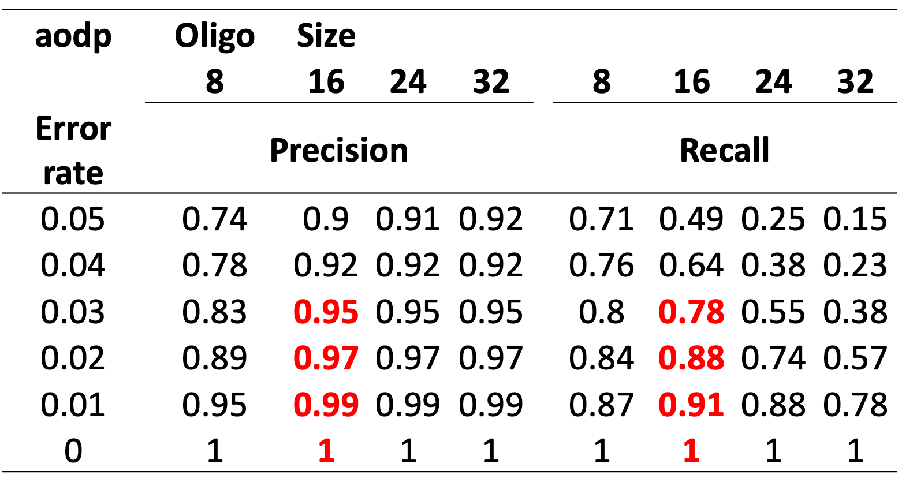

# 1. (Optional) SSH into your remote server
ssh -Y ubuntu2204 # or yourname@your.remote.server
# 2. Wrap in tmux to preserve the session
tmux new -s aodp-training
# …if disconnected:
# ssh -Y ubuntu2204
# tmux attach -t aodp-training
# 3. Change to your working directory
cd "$wkdir"
# 4. List available environments and activate yours
conda env list
conda activate aodp-training
# 5. Verify installation
which aodp
aodp --helpRun AODP for species level classification
Step-by-step instructions for activating your environment, running AODP, and integrating results
Activate conda environment
BASH Block
Run AODP
To runAODP, prepare a high-quality refDB in UNITE General Release format, here we use CR-ITS2-refDB.fasta in the refDBs folder. We will use “Pucciniales_asv.fasta” you have just created, which includes the representative sequences of all Pucciniales ASVs from the current study.
BASH Block
# Single oligo-size run
time aodp \
--threads 8 \
--match output/Pucciniales_asv.fasta \
--oligo-size 16 \
--match-output output/Pucciniales_asv.vs.CRITS2refDB.16.aodp \
--max-homolo 0 \
refDBs/CR-ITS2-refDB.fasta
# Batch run over multiple oligo sizes
for os in 8 16 24; do
echo "oligo-size = $os"
time aodp \
--threads 8 \
--match output/Pucciniales_asv.fasta \
--oligo-size "$os" \
--match-output output/Pucciniales_asv.vs.CRITS2refDB."$os".aodp \
--max-homolo 0 \
refDBs/CR-ITS2-refDB.fasta
done
# 6. Inspect results
cd output
ls -lh Pucciniales_asv.vs.CRITS2refDB*.aodp
# Count and list identified Pucciniales ASVs
grep Pucciniales Pucciniales_asv.vs.CRITS2refDB.16.aodp \
| cut -f1 \
| sort -u \
| tee Pucciniales_identified_asvs.txt \
| wc -l
# 7. (Optional) Deactivate when done
conda deactivateProcessing AODP outputs in R to obtain taxonomic classification
Previously, we have demonstrated that the best precision and recall were achieved by oligo-size = 16 (Figure 1)

R Block
# 0) Load required libraries ------------------------------------------------
library(dplyr)
library(tidyr)
library(stringr)
library(phyloseq)
# 1) Read & inspect raw AODP output ----------------------------------------
aodp_file <- "output/Pucciniales_asv.vs.CRITS2refDB.16.aodp"
ranks <- c("kingdom","phylum","class","order","family","genus","species","strain")
# 3rd quatile interspecific variation: 0.0152,
# (1-0.0152)*100 = 98.2
intraspecific_cutoff <- 98.2
aodp <- read.delim(
aodp_file,
header = FALSE,
col.names = c("ASV","tax","percent_identity","match_length",
"ASV_length","min_set","largest_cluster"),
stringsAsFactors = FALSE
)
# 2) Filter best hits & parse taxonomy -------------------------------------
aodp_filt <- aodp %>%
filter(tax != "-") %>% # drop no‐hits
mutate(
percent_identity = as.numeric(str_remove(percent_identity, "%")), # "xx.x%" → numeric
tax = str_remove(tax, ";$") # drop trailing semicolon
) %>%
# keep only top‐hit per ASV, above your cutoff
group_by(ASV) %>%
filter(percent_identity == max(percent_identity) & percent_identity >= intraspecific_cutoff) %>%
ungroup() %>%
# split out “species|accession|desc|kingdom;…;strain”
separate(tax,
into = c("species1","accession","accession2","desc","taxonomy"),
sep = "\\|",
extra = "merge", fill = "right",
remove = FALSE) %>%
# turn the semicolon‐separated taxonomy into rank columns
mutate(taxonomy = str_remove_all(taxonomy, "[dkpcofgst]__")) %>%
separate(taxonomy,
into = c("kingdom","phylum","class","order",
"family","genus","species","strain"),
sep = ";",
fill = "right",
remove = FALSE) %>%
select(-species1)
# 3) Summarize unique values & counts per rank ----------------------------
unique_tbl <- aodp_filt %>%
group_by(ASV, percent_identity) %>%
summarise(
across(all_of(ranks),
~ if (n_distinct(.x) == 1) unique(.x) else NA_character_),
.groups = "drop"
)
count_tbl <- aodp_filt %>%
group_by(ASV) %>%
summarise(
across(all_of(ranks), n_distinct, .names = "n_{.col}"),
.groups = "drop"
)
ref_tbl <- aodp_filt %>%
group_by(ASV) %>%
summarise(
refseq = paste(unique(tax), collapse = ","),
.groups = "drop"
)
# 4) Compute LCA & rebuild full lineage -----------------------------------
lca_tbl <- unique_tbl %>%
left_join(count_tbl, by = "ASV") %>%
rowwise() %>%
mutate(
lca_ix = max(which(c_across(starts_with("n_")) == 1)),
LCA_rank = ranks[lca_ix],
LCA_value = c_across(all_of(ranks))[lca_ix]
) %>%
mutate(
across(all_of(ranks), ~ {
pos <- match(cur_column(), ranks)
if (pos < lca_ix) c_across(all_of(cur_column()))
else if (pos == lca_ix) LCA_value
else paste0(cur_column(), "_undefined")
})
) %>%
ungroup() %>%
left_join(ref_tbl, by = "ASV") %>%
rename_with(~ paste0("aodp.", .x), -c(ASV, percent_identity, refseq))
# 5) Identify ASVs dropped by filtering -----------------------------------
dropped_asvs <- tibble(ASV = unique(aodp$ASV)) %>%
anti_join(lca_tbl, by = "ASV")
# 6) Bundle & save final results ------------------------------------------
aodp_final <- list(
assigned = as.data.frame(lca_tbl),
removed = as.data.frame(dropped_asvs)
)
saveRDS(aodp_final, "output/aodp_final.RDS")
# Quick sanity checks
head(aodp_final$assigned[ , c("ASV", "aodp.species")]) ASV aodp.species
1 01cacf96e7fa2e5878c556340e95a4fa Puccinia_coronata.VARavenaeFSPavenae
2 03f65040eace36047cc5eb6e507e35c6 Puccinia_coronati.agrostidis
3 05c6675f4aa67e096b63c32592fb6463 Puccinia_recondita.CladeX
4 078d4add0e482cd30c534182c0a968d6 Puccinia_coronati.calamagrostidis
5 07eed27dc85e519745652fb39aa4a969 Puccinia_striiformis
6 15a671eb88b1aa72fff8d0216e8322ae Puccinia_graminis.CladeIIhead(aodp_final$removed, 5) ASV
1 4d9559ba3858a04ed426aca2a16a20c7
2 af30d59db0971be9bf4845c2c9ffa539
3 421e23034de1b2ba404dfcd8fef8b57d
4 36a9adec4480a8f20b320162ae4c1559
5 7d980b270e1ab4d7b9a407520da41ed3Modify phyloseq object by replace the species level classification based on AODP
R Block
# 1) Load libraries ---------------------------------------------------------
library(phyloseq)
library(dplyr)
library(tibble)
library(stringr)
# 2) Read in objects -------------------------------------------------------
ps_orig <- readRDS("output/phyloseq_rust.rds")
aodp_final <- readRDS("output/aodp_final.RDS")
# 3) Build new taxonomy table ---------------------------------------------
tax_df <- tax_table(ps_orig) %>%
as.data.frame(stringsAsFactors = FALSE) %>%
rownames_to_column("ASV") %>%
left_join(
aodp_final$assigned %>%
select(ASV, aodp.family, aodp.genus, aodp.species),
by = "ASV"
) %>%
mutate(
# 3a) override family/genus if AODP provided
family = coalesce(aodp.family, family),
genus = coalesce(aodp.genus, genus),
# 3b) decide species: use AODP or fall back to genus_sp
genus_base = str_remove(genus, "_sp$"),
species = if_else(
!is.na(aodp.species),
aodp.species,
paste0(genus_base, "_sp")
)
) %>%
select(kingdom, phylum, class, order, family, genus, species, ASV) %>%
column_to_rownames("ASV") %>%
as.matrix()
# 4) Swap taxonomy back into phyloseq --------------------------------------
ps_aodp <- ps_orig
tax_table(ps_aodp) <- tax_table(tax_df)
# 5) Sanity checks & save --------------------------------------------------
# ensure no double “_sp_sp” artifacts
stopifnot(!any(str_detect(tax_table(ps_aodp)[, "species"], "_sp_sp")))
# peek at first two modified ASVs
tax_table(ps_aodp)[aodp_final$assigned$ASV[1:2], ]Taxonomy Table: [2 taxa by 7 taxonomic ranks]:
kingdom phylum class
01cacf96e7fa2e5878c556340e95a4fa "Fungi" "Basidiomycota" "Pucciniomycetes"
03f65040eace36047cc5eb6e507e35c6 "Fungi" "Basidiomycota" "Pucciniomycetes"
order family genus
01cacf96e7fa2e5878c556340e95a4fa "Pucciniales" "Pucciniaceae" "Puccinia"
03f65040eace36047cc5eb6e507e35c6 "Pucciniales" "Pucciniaceae" "Puccinia"
species
01cacf96e7fa2e5878c556340e95a4fa "Puccinia_coronata.VARavenaeFSPavenae"
03f65040eace36047cc5eb6e507e35c6 "Puccinia_coronati.agrostidis" saveRDS(ps_aodp, "output/phyloseq_rust_aodp.rds")